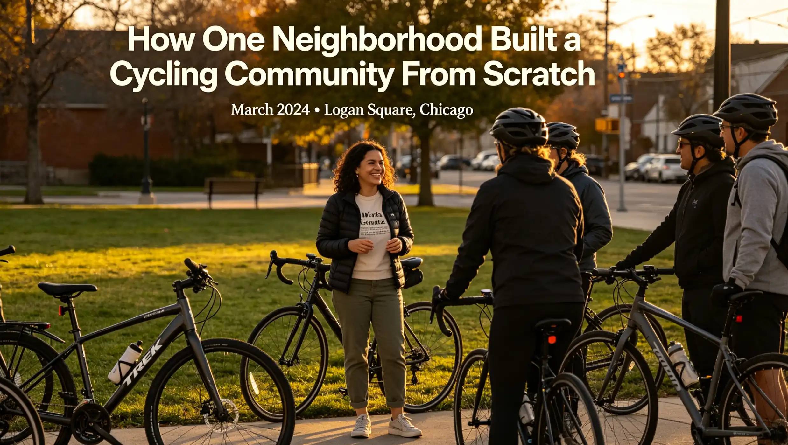

You've watched bike lanes appear on your street but still feel disconnected from other riders. You see group rides passing by on weekends but don't know how to join — or whether you'd even be welcome. Urban cycling can feel isolating when you're riding solo, and the barriers to entry for organized cycling groups can seem impossibly high. This article maps the rapid growth of urban cycling communities in 2026, explains exactly how they work, and shows you how to find or build your own local riding group — no matter your skill level or budget.
How One Neighborhood Built a Cycling Community From Scratch
In March 2024, Maria Gonzalez lived in the Logan Square neighborhood of Chicago and rode her Trek FX 2 hybrid bike to work every day — a 4.2-mile commute she'd been doing solo for three years. She knew other cyclists existed in her neighborhood because she'd see them at traffic lights, but they never spoke. One evening, she posted a simple message on a neighborhood Facebook group: "Anyone want to do a casual Saturday morning ride? Meet at Palmer Square Park, 8 AM, no spandex required."
Eight people showed up. The following week, sixteen. By June 2024, the Logan Square Cyclists group had 120 members meeting every Saturday, with a WhatsApp group that buzzed constantly. Maria told me, "I spent $0 on marketing. People were just waiting for someone to say 'let's go.'" Today, the group runs three weekly rides — a Saturday social ride (8-12 miles at 10-12 mph), a Tuesday evening skills clinic in the park parking lot, and a monthly "Bikes and Breakfast" ride that ends at a local diner. The group has successfully lobbied the local alderman for two new protected bike lanes and secured a $15,000 neighborhood grant for bike repair stations. This story isn't unique — it's happening in cities everywhere, and the pattern is remarkably consistent.
Why Urban Cycling Communities Are Exploding in 2026
Several converging factors have fueled this growth. The National Association of City Transportation Officials (NACTO) reported that U.S. cities installed 1,100 miles of new bike lanes in 2024 alone, a 42% increase from 2020. The League of American Bicyclists' 2025 survey found that 67% of new cyclists cite "finding a community" as their primary reason for continuing to ride beyond the first six months. Meanwhile, the average cost of car ownership in the U.S. reached $12,182 per year in 2025 according to AAA, pushing more people toward two-wheeled transportation.
| City | New Bike Lanes Added (2024-2025) | Registered Cycling Groups | Bike Commute Share Increase |
|---|---|---|---|
| Portland, OR | 38 miles | 87 | +3.2% |
| Minneapolis, MN | 45 miles | 64 | +4.1% |
| Chicago, IL | 52 miles | 112 | +2.8% |
| Austin, TX | 29 miles | 53 | +3.6% |
| Denver, CO | 41 miles | 71 | +5.0% |
Data sources: NACTO 2025 Annual Report, League of American Bicyclists Community Survey 2025, U.S. Census Bureau ACS 2024 estimates.
Types of Urban Cycling Communities
Not all cycling communities look the same. Understanding the different formats helps you find the right fit. The most common types in 2026 include:
Social Ride Groups — These are the most accessible, typically free, and organized through apps like WhatsApp, Strava Clubs, or Discord. Rides average 10-15 miles at a conversational pace of 10-13 mph. Examples include the nationwide "Coffee Outside" movement and neighborhood-specific groups like Logan Square Cyclists.
Advocacy Organizations — Groups like PeopleForBikes and local bike coalitions focus on infrastructure and policy. Membership typically costs $25-$50 per year. They organize fewer rides but have more political influence. In 2025, PeopleForBikes helped pass 23 state-level bike safety laws.
Shop-Sponsored Clubs — Local bike shops host weekly rides, often free, as a way to build customer loyalty. These typically include A, B, and C pace groups. REI's 2025 community report showed that shops hosting regular rides saw a 31% increase in year-over-year revenue compared to those that didn't.
Identity-Based Groups — Organizations like Black Girls Do Bike (200+ chapters worldwide) and Radical Adventure Riders create safe spaces for underrepresented cyclists. These groups grew by an average of 28% in membership during 2024-2025.
How to Find Your Local Cycling Community
Finding a group is easier than most people think. Start with the Strava app — the "Clubs" tab lets you filter by location and activity type. Over 65% of cycling groups now maintain a Strava Club presence. Next, check your local bike shop's bulletin board or website. Independent shops often run weekly rides and can connect you with other groups. For advocacy-focused communities, the League of American Bicyclists maintains a directory of over 1,200 local organizations searchable by ZIP code. Meetup.com lists 3,800 active cycling groups across the U.S. and Canada, with an average group size of 340 members. If nothing exists in your area, the Logan Square story proves that starting one requires nothing more than a social media post and a willingness to show up.
The Economic Ripple Effect
Urban cycling communities drive measurable economic benefits. A 2025 study by Portland State University's Transportation Research Center found that neighborhoods with active cycling groups saw a 14% increase in foot traffic to local businesses along bike routes. Coffee shops and cafes along popular cycling routes reported an average revenue increase of $18,000 per year from cyclist customers. Bike shops in cities with at least five active cycling groups reported 22% higher annual revenue than those in cities with fewer groups. The economic argument has become a powerful tool for advocacy groups pushing for better infrastructure.
Frequently Asked Questions
Absolutely not. Most social ride groups welcome any functional bike. I've seen riders on $300 hybrids keeping pace with riders on $3,000 road bikes. The only requirement is that your bike is in safe working condition — brakes that work, tires properly inflated, and a chain that doesn't skip.
Who This Is For (And Who It's Not)
Best for: Urban residents who want to meet fellow cyclists, improve their riding skills in a supportive environment, or get involved in local bike advocacy. Beginners are especially welcome in most social ride groups.
Not ideal for: Competitive racers seeking structured training with power-based metrics and podium goals. Those riders should look for USA Cycling-sanctioned racing clubs instead.
Most established groups have multiple pace levels. A "no-drop" policy is standard for social rides, meaning no one gets left behind. If you're unsure, message the ride organizer beforehand and ask about the average speed. Groups typically list speeds in mph — look for "casual" (8-12 mph) or "conversational" pace rides.
Yes. Black Girls Do Bike has over 200 chapters globally. The Radical Adventure Riders (RAR) community supports LGBTQ+ and femme riders. Major cities also have women-specific groups like SheSpoke in Denver and Velo Girls in the Bay Area. These groups prioritize safety and inclusivity.
Most social ride groups are completely free. Advocacy organizations typically charge $25-$50 per year. Shop-sponsored clubs are usually free, though riders are encouraged to support the shop. The only essential costs are basic safety gear: a helmet ($30-$80), lights ($20-$50), and a lock ($25-$60).
Strava is the most popular with 65%+ of cycling groups maintaining a presence there. Meetup.com lists 3,800+ cycling groups. The Ride Spot app by PeopleForBikes is growing rapidly with 500,000+ users. For spontaneous rides, the Lanes app (launched 2025) matches nearby riders in real-time.
Start with a simple social media post in a neighborhood group. Pick a consistent day, time, and meeting spot. Keep the first ride short (5-8 miles) and at an easy pace. Create a WhatsApp or Strava Club for ongoing communication. Maria Gonzalez's Logan Square group grew from 8 to 120 members in six months with zero advertising budget.
It depends on your climate. Groups in cities like Minneapolis and Chicago often continue through winter with fat-tire bikes and appropriate clothing. Groups in warmer climates ride year-round. Most groups post their seasonal schedules on their social media pages. Winter riding is entirely feasible with studded tires ($80-$120 per tire) and proper layering.
Conclusion
Urban cycling communities are one of the most accessible and rewarding ways to deepen your connection to cycling. They require no special equipment, no racing license, and often no money — just a bike and the willingness to show up. The infrastructure, technology, and social momentum are all aligned in 2026 to make finding or building a community easier than ever.
Action Steps:
- Download Strava or Meetup and search for cycling groups within 10 miles of your ZIP code. Join at least two clubs today.
- Visit your local bike shop and ask about their group ride schedule. Most shops post this on a physical bulletin board.
- If no group exists near you, post a message in your neighborhood Facebook or Nextdoor group proposing a casual weekend ride. Pick a date two weeks out to give people time to plan.
Sources: NACTO 2025 Annual Report (nacto.org), League of American Bicyclists Community Survey 2025, AAA Your Driving Costs 2025, Portland State University TREC Study 2025, PeopleForBikes 2025 Impact Report, U.S. Census Bureau American Community Survey 2024, REI Community Impact Report 2025.